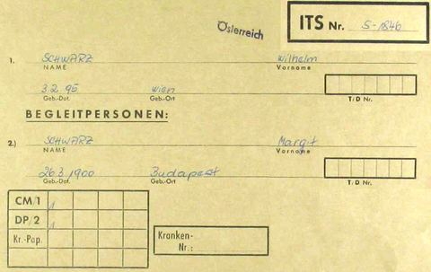
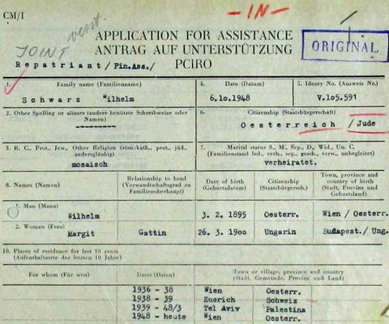
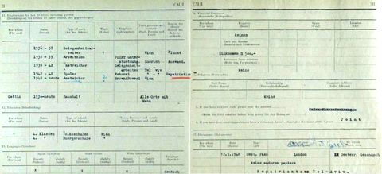
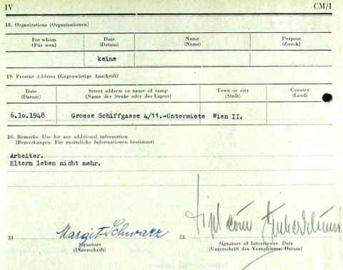
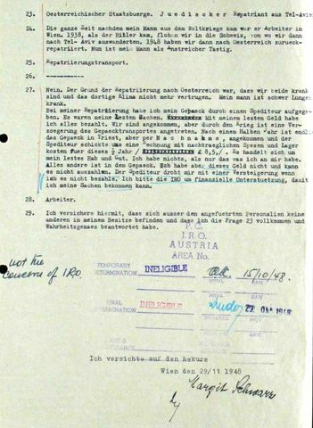
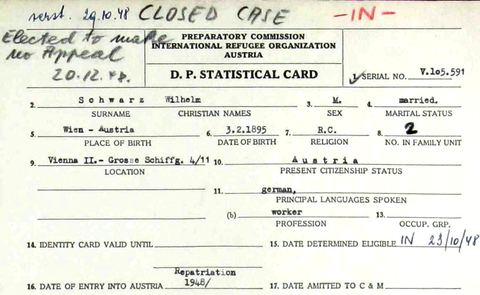
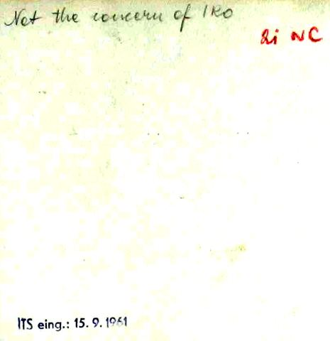

Wilhelm Schwarz
1895–1954
Life events
| Born | |
|---|---|
| Lived | 24 Jul 1898 · 1200 Bäuerlegasse 19, Vienna, Austria Map · per Richard's birth |
| Lived | 14 Feb 1909 · 1200 Bäuerlegasse 19, Vienna, Austria Map · per Philipps' marriage |
| Lived | 21 Mar 1920 · 1200 Wolfsaugasse 10-21, Vienna, Austria Map · per marriage record |
| Married | 21 Mar 1920 · Margit Jucht · Brigittenauer Tempel, 1200 Kluckygasse 11, Vienna, Austria Map |
| Emigrated | 1938 · Zürich, Switzerland Map |
| Emigrated | 1939 · Tel Aviv, Israel Map |
| Emigrated | |
| Lived | 1 Nov 1948 · 1020 Grosse Schiffgasse 4, Vienna, Austria Map |
| Died | 1 Mar 1954 · Vienna, Austria Map |
| Buried | 3 Mar 1954 · Vienna, Austria Map · Vienna Zentral Friedhof: Section: T4 Group: 020 A Row: 5 Grave: 36. Buried with father Moses/Moriz Schwarz. |
Family

Margit Jucht1900–1983
Photos

Moses Moritz Schwarz
Wilhelm Schwarz
Wilhelm Schwarz
Margit Jucht
Moses Moritz Schwarz
Wilhelm Schwarz
Margit Jucht

Wilhelm Schwarz

Wilhelm Schwarz

Wilhelm Schwarz

Wilhelm Schwarz

Wilhelm Schwarz

Wilhelm Schwarz

Wilhelm Schwarz